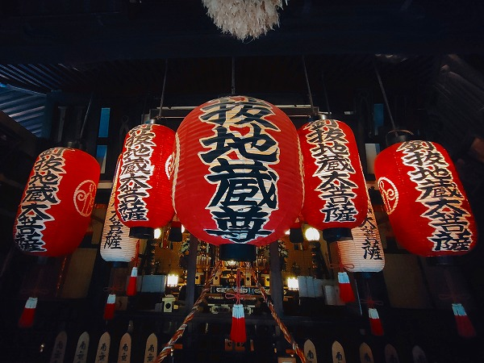
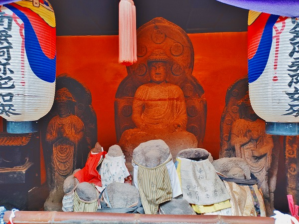

コロナ禍の京都のハナシ。
夏休みだというのに人はまばらで、何とも寂しい。
そういえば東京オリンピックも何だかなー、って感じでしたね。
久し振りに西陣辺りをウロウロしてみた。
最初に訪れた千本釈迦堂はコロナのため拝観中止だった。コロナめー。
で、
釘抜地蔵。
ここは石像寺というお寺なのだが、釘抜地蔵という名で親しまれている。
それは何故かというのは追々。
毎月の縁日も中止。
夏の京都といえば地蔵盆だが、そちらも中止だった(2021年のハナシ）。
釘抜地蔵の提灯。
京都のお地蔵さんにありがちなオシャレなデザインの提灯。
この提灯を見ると京都に来たなー、と思う。
地蔵堂前には様々な短冊が掲げられていた。
旧暦の七夕、という事でよろしいんでしょうか？
その前にある釘抜き。
釘抜き自体が信仰の対象になっているかのような仰々しさだ。

地蔵堂内。
それにしても提灯の多い寺だ。
薄暗い堂内に並ぶ提灯は異様な迫力があった。
その提灯の脇には多くの
釘抜きの絵馬が奉納されていた。
基本形は額の中に釘抜き（ヤットコってやつですね）と釘がセットになって奉納されている。
中には釘抜きと釘を放射状に並べたアーティスティックな絵馬も奉納されていた。

撫でられ過ぎて塗装がほぼ剝れてしまったおびんずるさま。
口から血を流しているのかと思ったわー！
驚くのはこの地蔵堂の外壁が全て釘抜き奉納で埋め尽くされているところ。
隙間なく釘抜きと釘の絵馬が並んでいる。
ユニットとしてはこんな感じ。
釘抜き×1釘×2、奉納年月日、奉納者名、年齢、干支、性別。
そして御礼とあるから願いが成就した後に奉納しているのだろう。
この寺は弘法大師が創建したという。
その際、唐から持ち帰った石にお地蔵様を自ら彫ったのだという。
そのお地蔵さんが苦しみを抜き取る苦抜地蔵と呼ばれるようになる。
いつしか苦抜＝釘抜となり釘抜きが奉納されるようになった、という訳。
…要はダジャレです。
ダジャレでも何でもいいんです。
様々な苦しみに悩む人のよりどころになるのであれば。

地蔵堂の裏手には阿弥陀様の石像が。
その手前には涎掛けをまとったお地蔵さんが並んでいた。
ついでに
千本えんま堂にも寄ってみた。
えんま堂には迫力のある巨大な閻魔様がいるのだが、この日は開扉していなかった。
しかし。
えんま堂の脇の建物から視線を感じるぞ。
と思ったら。
巨大な閻魔像が鎮座していた。
地元の方々が作ったモノらしいが、これはこれで本尊の閻魔像とは別の意味で迫力があるじゃないか。
以前訪れた際は無かったので最近作られたと推測できる。
両サイドに司命、司録とあるがその姿は確認できなかった。
堂内には閻魔大王の裁きと地獄の責め苦の板絵があった。
ほとんど消えかかっているが一見の価値はあると思う。
えんま堂脇にはお地蔵さんが並ぶプールみたいな池がある。
この池に水塔婆と呼ばれる薄い塔婆を浮かべ鐘をついて故人の霊を供養するのだ。
釘抜地蔵同様、ここも観光客や参拝客の姿はなかった。
何だかなー
この後、タイルで有名な船岡温泉に入って西陣パトロールは完了。
コロナがおさまったらまた来よう。